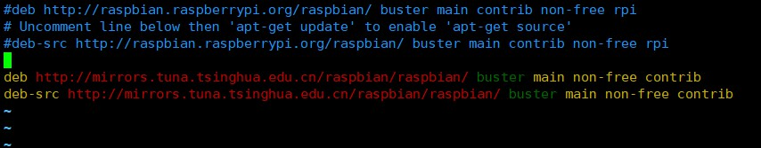
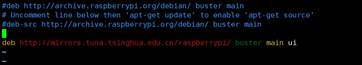

前一段时间入手了一个树莓派4B，准备在无聊的时候鼓捣鼓捣，看看能不能做出点啥。刚拿到的树莓派第一反应却是无从入手，经过一番探索，终于把树莓派配置完成了。写个笔记记录一下，方便下次使用。
1. 安装系统
1.1 下载系统镜像
首先先去树莓派官网下载你所需要的系统镜像，下载地址https://www.raspberrypi.org/downloads/。这里选择的是自己手动安装镜像，所以选择下面这个。

然后可以看到有多个系统镜像可供选择，如果没啥需要的话可以直接下载官方提供的镜像。第一个和第二个都是有图形界面的，他俩的区别就是第一个预安装的有一些软件，这里用不到。第三个适合使用开源系统熟练的人用。这里选择第二个。将系统镜像下载到本地。

1.2 格式化内存卡
树莓派使用的是内存卡启动，所以首先要提前准备好一张内存卡，至少的4G的，这里用的是64G的。然后去找一个格式化内存卡的软件，这里使用SD Memory Card formatter进行内存卡格式化。下载地址https://www.sdcard.org/index.html。

下载安装完成之后，将树莓派的内存卡插在电脑上，打开软件。选择要格式化的树莓派内存卡，不需要其他设置，直接点击Format即可，这样内存卡就格式化完成了。

1.3 写入镜像
接下来将下载好的.img镜像写入内存卡，可以使用 Win32 Disk Imager 或 Etcher。Win32 Disk Imager 界面相对简单、有校验选项，Etcher偏向简洁。Etcher下载地址：https://www.balena.io/etcher。Win32 Disk Imager下载地址：https://sourceforge.net/projects/win32diskimager/。这里选择Win32 Disk Imager进行镜像的写入。运行Win32 Disk Imager之后，选择我们下载解压后的.img镜像，设备选择内存卡（如果只插入了内存卡，程序会默认帮我们选好），点击写入，确定，之后等待写入完成。

注意！！！如果给树莓派配的有显示器的，这个时候可以直接将内存卡插入到树莓派中进行开机了。如果没有显示器的，这个时候先不要着急拔出读卡器，接下来还要进行系统配置，方便访问树莓派。
2. 连接树莓派
2.1 开启SSH
2.1.1 开机前配置
没有给树莓派配置显示器的，可以在内存卡中先开启树莓派SSH，在boot盘创建一个名为ssh的无后缀空文件，无后缀！这样在树莓派启动的时候就打开了ssh，可以进行连接。

2.1.2 开机后用图形界面配置
如果有显示屏并且已经连接到树莓派的，点击树莓派界面左上角的树莓图标，点Preferences的这个图标，再点击下面倒数第二个树莓图标打开树莓派的设置。

选择Interfaces标签，将SSH那一行Enabled前面的那个圆点上，按右下角的OK保存，重启树莓派后就会自动开启SSH服务。

2.1.3 开机后用命令行配置
如果有显示屏并且已经连接到树莓派的，点击及界面上面菜单栏黑色框打开可以输入命令行的终端。在打开的界面命令行输入：sudo raspi-config，按enter键运行。

键盘下移移动到Interfacing Options，按enter键。

选择ssh，按回车确认，然后选择yes进行保存，重启树莓派后就会自动开启SSH服务。

2.2 SSH登录树莓派
2.2.1 网线连接
如果是通过网线将树莓派与路由器直接相连接的，可以去路由器管理页面查看所连接设备的IP地址，然后使用ssh连接工具进行连接就行。
- 默认账户：pi
- 默认密码：raspberry
如果是通过网线和笔记本电脑进行连接的，那么先依次打开控制面板–>网络和Internet–>网络连接。找到当前笔记本连接的WIFI网络右键查看属性。选择共享标签，勾选“允许其他用户通过此计算机的Internet连接来连接” ，选择连接树莓派的以太网，然后确定保存配置。

然后打开电脑cmd命令行，输入ipconfig查看当前笔记本IP，然后找到无线局域网适配器 本地连接* 11，查看这个下面的IPv4 地址。这里的是192.168.137.1，记住这个ip，后面要用。

输入arp -a回车来查看当前网络连接，下翻找到192.168.137.*开头的接口地址，下面列出来的有一个动态地址就是当前树莓派的IP地址，然后就可以通过该IP进行ssh连接到树莓派。
如果在192.168.137.*开头的接口地址下没有显示动态地址，或者说动态地址不是当前树莓派的地址，那么你很幸运，需要挨个去测试到底哪个才是树莓派的IP地址。

2.2.2 WIFI连接
如果当前手边没有可用的网线，也可以使用WIFI的的形式进行树莓派的网络连接。将内存卡插到电脑上，在boot盘的根目录下创建wpa_supplicant.conf文件，下入下列内容进行保存。可以配置多个wifi网络，树莓派会根据设置的priority优先等级进行连接，数字越大等级越高，同等级的则从上至下依次选择。连接成功之后去查看wifi管理页面，找到一个连接设备名为raspberrypi的设备，这个对应的IP地址就是树莓派的IP地址。然后就可以通过该IP进行ssh连接到树莓派。
1 | |
如果开机之后要修改WIFI配置，文件的位置在/etc/wpa_supplicant/wpa_supplicant.conf，这个文件是个只读文件，在修改之前可先执行下面命令，修改一下文件权限即可。
1 | |
2.2.3 配置固定IP
树莓派无论是通过网线连接还是WIFI连接，每次连接到网络的之后都会被重新分配一次IP，这样每次在连接前都需要重新查看树莓派的IP地址，然后再进行连接。其实可以给树莓派的设置一个固定IP，这样以后树莓派在同一局域网下的IP地址就固定了。首先连接上树莓派之后，通过ifconfig命令查看当前IP地址。

可以看到此时树莓派是通过WLAN接口进行网络连接的。然后通过sudo nano /etc/dhcpcd.conf命令打开文件，在文件的最后添加以下内容。下面分别配置eth0和wlan0接口的静态地址。
树莓派自带的
nano编辑器使用ctrl+o进行保存，使用ctrl+x退出文件。
1 | |
- static ip_address：这个就是配置树莓派的静态IP地址的。
- static ip6_address：这个是配置树莓派的IPV6的地址的，不用配置。
- static routers：这个是当前网络的网关地址。
- static domain_name_servers：这个第一个参数是当前网络的网关地址；后面一个配置的是DNS服务器。
这里除了你当前本地的DNS服务器地址以外，还可以配置两外两个。
114.114.114.114：是国内移动、电信和联通通用的DNS，手机和电脑端都可以使用，干净无广告，解析成功率相对来说更高，国内用户使用的比较多，而且速度相对快、稳定，是国内用户上网常用的DNS。
8.8.8.8：是GOOGLE公司提供的DNS，该地址是全球通用的，相对来说，更适合国外以及访问国外网站的用户使用。
上述配置完成之后，reboot重启树莓派，即可通过刚刚配置的静态IP地址来远程树莓派，这样以后只要是在同一网关下，就可以使用这个IP地址来访问树莓派。
注意！注意！注意！树莓派一般都连接到一个局域网之中就不会随意更换了，如果你要让树莓派连接另外的网络，需要连接原来的网络，先将固定IP的配置取消掉，然后再连接新的网络，否则可能会出现连不上网的情况。
3. 树莓派的基础配置
3.1 更改软件源
在开始树莓派的各种 DIY 之前，我们还需要做一件很重要的事情更换软件源。 软件源是指 debian 系操作系统的应用程序安装包仓库，很多的软件都会这收录到这个仓库里面。而树莓派的 raspberrypi 操作系统也是基于 debian 的，所以树莓派也有自己的软件源，用来收录各种树莓派应用程序。默认情况下，树莓派软件源地址是 http://archive.raspbian.org/，位于欧洲，在国内访问是非常慢的，经常只有几 k 每秒的下载速率。所以我们在玩转树莓派之前，强烈推荐替换成国内的软件源。树莓派的所有软件源地址可以从这里找到https://www.raspbian.org/RaspbianMi…
在这找一个国内的就行，比如清华大学的（下图表格的第一行）。

然后输入命令sudo nano /etc/apt/sources.list并回车，进入编辑。如下图所示，把原来的内容注释掉（最前面加 # 号）。
1 | |
然后再预选的软件源添加到文件中：
1 | |
最后文件内容如下。

nano 是树莓派内置的轻量文本编辑器，使用方法是按 ctrl+o 保存，按 ctrl+x 关闭。
同样的方法，输入命令sudo nano /etc/apt/sources.list.d/raspi.list并回车，然后也将原来的内容注释掉，然后添加如下内容；
1 | |
最后文件内容如如下：

至此，树莓派软件源就替换好了。然后就可以执行以下命令进行更即可。
1 | |
3.2 设置时间
在树莓派上，可以用date命令来查看当前的日期时间，后面的CST表示中国标准时间。

如果显示的时间和当前时间不一致，那么就要设置一下树莓派的时区了。输入下面命令进行设置。
1 | |
通过上下键选择Asia然后回车确认。

通过上下键选择Shanghai然后回车确认。

再次查看时间可以看到时间已经准确。

树莓派没有电池，断电后无法保存时间。树莓派默认安装了NTP(Network Time Protocol)服务来获取互联网上ntp服务器提供的时间。如果这个时间不准，可以用这个命令校准一下。
1 | |
如果还是不准，就用下列命令强制设置。
1 | |
3.3 设置中文
树莓派默认的系统语言是英文的，而且系统里没有预装中文字库，因此我们在设置语言之前需要先给树莓派安装上中文的字库。这里提供一个免费开源的中文字库。在终端输入以下命令即可：
1 | |
中文字库安装完成之后，还需要安装一个中文输入法。输入如下命令：
1 | |
在中文字库以及输入法都安装好之后，我们输入sudo raspi-config命令来打开配置页面。然后通过方向键依次选择Localisation Options和Locale，通过回车键确认。


之后我们会进入到语言选择界面，在众多选项中找到en_GB.UTF-8 UTF-8，系统默认是这个，前面有个*，敲空格可以去掉这个星号。之后在这些语言中找到en_US.UTF-8 UTF-8，zh_CN.UTF-8，zh_CN.GBK GBK（用PageUp、PageDown找会比较快）并用空格在它前面的方括号中打上*，表示启用该语言。然后tab键切到<OK>上，回车，然后会显示自动设置，设置完重启树莓派。
3.4 开启VNC
没有给树莓派配备显示器的，如果想要通过桌面(图像化界面)连接到树莓派，就需要开启VNC，然后借助VNC连接工具进行桌面连接。首先是在树莓派上打开VNC配置。还是输入sudo raspi-config命令打开配置面板。然后依次选择Interfacing Options回车，选择VNC回车，最后选择<Yes>回车确认，现在树莓派的VNC服务已经打开了。


通过VNC连接需要借助的工具是VNC Viewer。这里是VNC Viewer的下载地址。安装完成之后，打开VNC Viewer，输入树莓派的IP地址、账号和密码，即可连接到树莓派桌面。
3.5 Windows远程桌面连接
远程连接树莓派桌面除了使用VNC，还有一种就是通过Windows的远程桌面进行树莓派的桌面连接。连接之前需要在树莓派上安装xrdp服务。执行sudo apt-get install xrdp命令进行安装。安装完成之后即可通过Windows的远程桌面进行连接树莓派桌面。首先通过win + r打开面板，然后输入mstsc点击确定。输入树莓派的IP进行连接。连接上之后需要输入树莓派的账号和密码进行登录。


4. 查看树莓派状态
自建一个python脚本，方便查看树莓派的各种状态和数据。包括当前CPU的稳如、CPU的内存占用情况、内存占用情况和硬盘占用情况。
首先创建脚本文件，命令如下。
1 | |
然后输入以下代码。
1 | |
之后就可以执行这个脚本了。
1 | |
脚本执行的结果如下。

5. 总结
以上就是对树莓派从入手到初步配置的一个简单记录，个自己做个笔记，下次再用的时候就方便了。树莓派能折腾的东西很多，以后有新的踩坑经历了再来接着写。